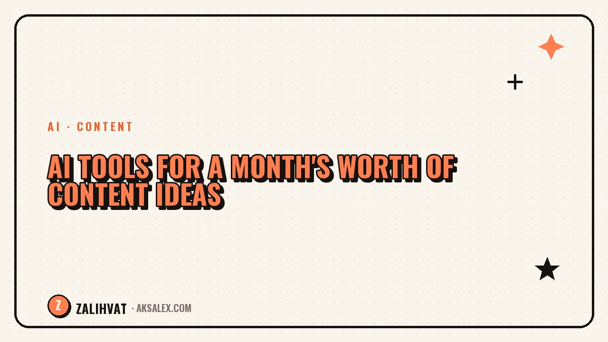

AI Tools for a Month's Worth of Content Ideas

The most common question a creator faces in the morning is what to film today. If you spend time on this every single day, your content plan turns into an endless scramble. AI handles this task faster than a human - it never gets tired of coming up with ideas and isn't afraid of repeating itself. Let's break down how to get a working list of topics for a month in one evening, rather than a pile of generic phrases.
Why plan topics for a month instead of video by video
When you search for a topic on shooting day, the decision is almost always made in a rush and lands on whatever's easiest to film, not on what your audience actually needs. A monthly plan removes that pressure: you can see in advance which topics are already covered and which haven't been touched, and you can spread demanding formats out between easier ones.
There's another benefit too - you get a bird's-eye view of your categories. Without a plan, it's easy to slide into the same topic for weeks in a row without even noticing.
How AI helps you sketch out a list of topics
AI isn't great because it invents brilliant ideas from scratch - it's great because it quickly fills up the volume. You give it your niche, your audience, and a few topics you've already covered, and it fills out a list of thirty items in a couple of minutes.
What to give the AI before your request
- Your niche and blog format in one or two sentences
- An audience profile: who's watching and what problem brings them to you
- A list of 5-10 topics you've already covered, to avoid repeats
- The number of ideas you want and how to split them across categories
A prompt structure for generating ideas
A step-by-step prompt works much better than a single generic phrase like "come up with blog ideas." Here's a structure that produces more specific results.
| Prompt step | What to include | Why it matters |
|---|---|---|
| Context | Niche, audience, blog tone | Keeps the AI from confusing your topic with generic advice |
| Constraint | List of topics already covered | Removes repeats and overused formats |
| Output format | A table: topic, category, format | Makes it easy to sort and move straight into your plan |
| Quantity | For example, 30 ideas for the month | Gives you a buffer to pick the best from |
How to sort ideas instead of publishing everything as-is
A list from AI is a draft, not a finished plan. Some ideas will be too generic, some won't fit your audience. Go through the list and sort into three buckets: filming this week, saving for later, and doesn't fit at all.
- Keep topics you can back up with personal experience
- Cut phrasings that dozens of other creators have already used
- Group similar ideas into categories instead of publishing them at random
- Don't be afraid to shelve a strong idea if you're not ready with the right format for it yet
AI gives you volume of ideas, but choosing the meaning and delivery is always the author's job.
Mistakes when using AI for a content plan
The biggest mistake is taking a list of ideas without editing it and filming it word for word. AI phrasing often sounds generic, and without your own story and examples, the video ends up looking just like everyone else's who's using the same tool.
The second mistake is asking for thirty ideas straight away without giving any context about your niche and audience. In that case, the result will be generic enough to fit anyone - which means it won't resonate with your specific readers.
Frequently Asked Questions
Which AI tool is best for generating content ideas?
Any modern chat-based language model will do - the result depends more on the quality of the prompt than on the specific tool.
How many ideas do you need for a month of content?
Usually 20-30 ideas with some buffer is enough for a month of posts, since some topics will get filtered out during sorting.
Can you shoot videos exactly as the AI phrases them?
It's better to use them as a foundation and add your own experience, examples, and delivery - otherwise the content will sound generic.
How often should you update your content plan with AI?
Once a month is enough for most blogs, plus you can generate extra ideas on the fly if a topic suddenly takes off.
What should you do if the AI keeps repeating the same ideas?
Give it a more detailed list of topics you've already covered and ask it to narrow the focus to a specific sub-niche - this almost always diversifies the answer.
not by hand